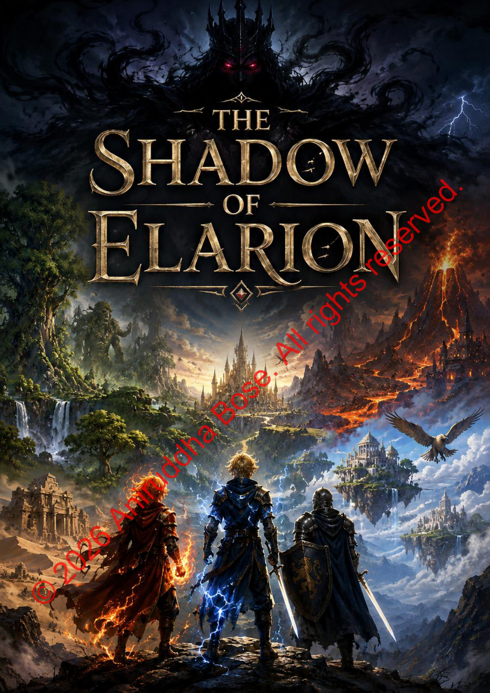

Aniruddha Bose
Home
About
Skills
Projects
Blog
Hobbies
Competitions
Contact
← Back to Blog
The Shadow of Elarion
My entry for Writathon 11.0, Singapore
100%

Page 1 / 18
← → to turn · scroll to zoom · F for fullscreen